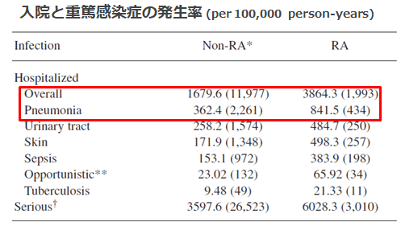
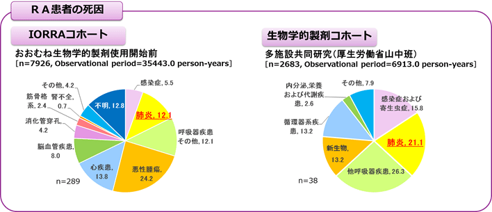

RA患者は感染症、特に呼吸器感染症に罹患しやすい
- ●RA患者は感染症に罹患しやすい1)
- ●そのなかで肺炎も起こりやすい（一般人口に比べて1.7~2.3倍といわれる） その理由⇒ADLの低さ、ステロイド使用、肺の基礎疾患（間質性肺炎、気道病変の合併）
- ●RA患者の死因に占める肺炎の頻度は、BIO未使用で12.1％、BIO投与例で21.1％であった

1) J Rheumatol. 2008 Mar;35(3):387-93. Epub 2008 Feb 1.

A Nakajima et al, Scand J Rheumatol. 2010;39(5):360-7
A Nakajima et al, Mod Rheumatol (2013) 23:945–952
RA患者は、関節外病変として呼吸器疾患を合併しており、吸器感染症に罹患しやすい
また、RA治療（免疫抑制）でその頻度は高くなる